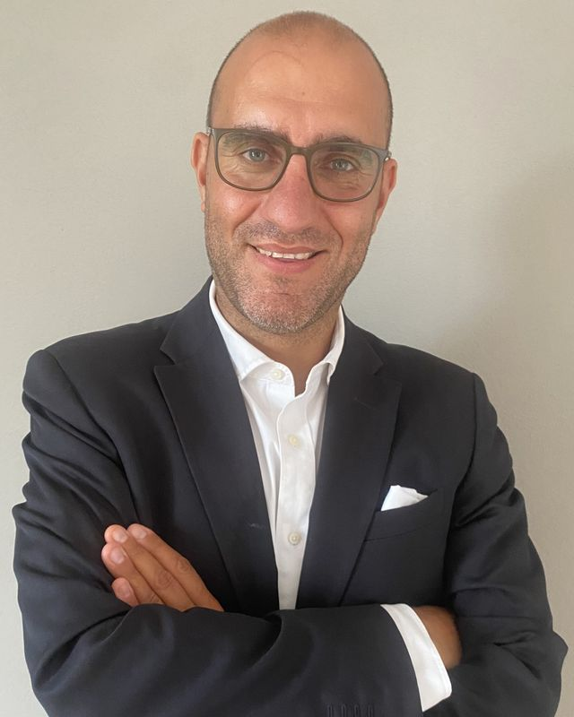

Consulenza per PMI · Sostenibilità e valore d'impresa
Aumentiamo il valore delle PMI italiane attraverso la sostenibilità.
La sostenibilità oggi pesa sul rating bancario, sulla permanenza nelle filiere dei grandi clienti, sull'accesso a bandi e sul prezzo di un'azienda quando entra un socio o un fondo. Aiutiamo le PMI a trasformarla da adempimento a leva di valore, con dati misurati, un benchmark su oltre 1.300 aziende mappate e un piano concreto.
20+anni di consulenza direzionale, finanziaria e organizzativa
1.300+aziende mappate per benchmark per settore, dimensione, territorio e tema ESG
1:1un interlocutore senior dall'analisi all'attuazione, senza passaggi di mano
Perché adesso
Chi valuta la tua impresa guarda già l'ESG
Le banche
Le linee guida EBA sulla concessione del credito chiedono di considerare i fattori ESG nella valutazione del cliente.
I grandi clienti
Le imprese soggette a rendicontazione chiedono ai fornitori dati su emissioni, persone e governance.
Investitori e acquirenti
Fondi e compratori inseriscono l'analisi ESG nella due diligence: i rischi non gestiti diventano sconti sul prezzo.
Il valore della sostenibilità per una PMI
Dove la sostenibilità diventa valore misurabile.
Per una PMI la sostenibilità conta quando sposta numeri concreti: costo del debito, fatturato, costi operativi, valore d'impresa. Queste sono le sei leve che verifichiamo in ogni azienda, ciascuna con l'indicatore che la rende misurabile.
Credito
Accesso al credito e condizioni
Dati ESG ordinati migliorano il dialogo con le banche, che integrano la sostenibilità nel merito creditizio e offrono linee dedicate a investimenti green.
Spread e condizioni ottenute, finanziamenti ESG-linked
Mercato
Posizione nelle filiere
Rispondere bene ai questionari dei clienti protegge le forniture esistenti e apre gare in cui la sostenibilità è un criterio di selezione.
Fatturato da clienti che richiedono dati ESG
Costi
Energia, materiali e sprechi
Misurare consumi e scarti fa emergere risparmi immediati: efficienza energetica, autoproduzione, riduzione di scarti e imballaggi.
Costo energetico su fatturato, kWh per unità prodotta
Agevolazioni
Bandi e incentivi
Molti strumenti di finanza agevolata premiano gli investimenti in transizione energetica e digitale, e chiedono di documentare l'impatto ambientale.
Contributi e crediti d'imposta ottenuti
Persone
Attrarre e trattenere talenti
Welfare, sicurezza, formazione e clima interno incidono su turnover e produttività, soprattutto dove le competenze sono difficili da trovare.
Turnover, ore di formazione, indice infortuni
Valore
Valore d'impresa e operazioni
In una cessione, un passaggio generazionale o l'ingresso di un fondo, un profilo ESG solido riduce i rischi percepiti e rende l'azienda più appetibile.
Rischi emersi in due diligence, multipli negoziati
Il quadro di riferimento, in breve
CSRD e semplificazioni europee
L'obbligo di rendicontazione riguarda le imprese più grandi, ma i loro dati dipendono dalla catena di fornitura: le richieste arrivano comunque alle PMI.
Standard VSME
Lo standard volontario per le PMI elaborato da EFRAG è il riferimento per rispondere a clienti e banche con un unico set di dati.
Merito creditizio
Le banche inseriscono i fattori ESG nei processi di concessione e monitoraggio del credito, anche verso le piccole imprese.
Private equity e M&A
Le politiche ESG dei fondi rendono l'analisi di sostenibilità una parte standard della due diligence.
Check-up ESG gratuito
Scopri dove si trova la tua impresa, rispetto a chi ti somiglia.
Abbiamo sviluppato uno strumento di check-up ESG pensato per le PMI. Poche domande mirate su ambiente, persone, governance e mercato, e un risultato immediato confrontato con il nostro database di oltre 1.300 aziende mappate.
GratuitoRisultato immediatoBenchmark su 1.300+ aziende
Punteggio ESG complessivoUn indice su 100 che fotografa il livello di maturità dell'impresa, con il livello raggiunto: punto di partenza, in sviluppo o avanzato.
Profilo per areaAmbiente, persone e governance valutati separatamente, per capire dove sei forte e dove sei esposto.
Benchmark con aziende similiIl confronto con oltre 1.300 imprese mappate, filtrabili per settore, dimensione, area geografica e singolo tema ESG.
Livello di urgenzaQuanto le richieste di clienti, banche e investitori ti riguardano già oggi o nei prossimi due anni.
Le prime tre prioritàGli interventi con il miglior rapporto tra sforzo e beneficio, da cui partire subito.
Ci contatti e fissiamo una breve call di presentazione.
Compili il check-up, da solo o insieme a noi: bastano pochi minuti.
Ricevi subito il risultato e lo commentiamo insieme, senza impegno.
Il confronto con aziende simili è il cuore del check-up. Lo costruiamo unendo l'esperienza sul campo con l'analisi sistematica di quello che le imprese pubblicano: siti, bilanci, documenti e report di sostenibilità.
1 · Fonti
Casi realiDati raccolti nei progetti seguiti in azienda.
Siti aziendaliAnalisi automatica (web scraping) di quanto le imprese comunicano online su ambiente, persone e governance.
Bilanci e documenti ESGBilanci d'esercizio, report di sostenibilità, dichiarazioni non finanziarie, certificazioni.
Pubblicazioni e reportStudi di settore, rapporti di filiera e pubblicazioni di riferimento.
2 · Elaborazione
1.300+aziende
Indicatori resi confrontabili
Classificazione per settore, dimensione e territorio
Punteggi per ambiente, persone e governance
Aggiornamento continuo con nuove fonti
3 · Risultato
Dove si colloca la tua impresa
62°
meno strutturatepiù strutturate
Settore
Dimensione
Area geografica
Singolo tema ESG
Esempio illustrativo. Nel check-up il confronto usa i dati reali del benchmark.
Dati osservati
Quello che le aziende pubblicano o che rileviamo direttamente nei progetti.
Dati elaborati
Indicatori e punteggi calcolati da noi per rendere le aziende confrontabili.
Esempi
Le figure del sito con dati di esempio sono indicate come tali.
Servizi
Dopo il check-up: i servizi per crescere.
La sostenibilità è il punto di ingresso, il valore si costruisce su tutta l'impresa. Le quattro aree si attivano singolarmente o insieme, con un unico referente.
A · ESG
Sostenibilità ESG per PMI
PMI in filieraImprese che accedono al credito
Le richieste ESG arrivano alle PMI dai clienti grandi, dalle banche e dai bandi, anche quando la legge non le obbliga. Le trasformiamo in un percorso gestibile, che produca dati veri e vantaggi concreti.
Check-up ESG e analisi di doppia materialità semplificata
Report di sostenibilità secondo lo standard volontario VSME
Risposta a questionari di filiera e piattaforme di rating
Piano di sostenibilità con obiettivi, KPI e responsabili
Indicatori ESG per la relazione con le banche e la finanza agevolata
Risultato: un set di dati ESG coerente e riutilizzabile, e una storia di sostenibilità credibile da presentare a clienti e finanziatori.
B · ORG
Organizzazione e performance
PMI in crescitaAziende familiari
Quando l'azienda cresce più in fretta della sua struttura, tutto passa dall'imprenditore. Ridisegniamo ruoli, processi e strumenti di controllo perché l'impresa funzioni anche senza di lui in ogni riunione.
Organigramma, deleghe e mansionari
Mappatura e snellimento dei processi chiave
Controllo di gestione: contabilità industriale, budget, reporting mensile
Cruscotto KPI per la direzione e le prime linee
Sistemi di obiettivi e incentivi legati alla performance
Risultato: responsabilità chiare, numeri mensili su cui decidere e un imprenditore con più tempo per la strategia.
C · PLAN
Piani industriali e business plan
ImprenditoriCdA e sociBanche
Un piano credibile unisce strategia e numeri: ricavi, marginalità, investimenti e flussi di cassa. Lo costruiamo con il management, in modo che sia uno strumento di governo e non un documento da cassetto.
Piano industriale triennale con conto economico, stato patrimoniale e rendiconto finanziario
Business plan per nuovi investimenti, mercati o linee di prodotto
Analisi di sostenibilità del debito (DSCR, posizione finanziaria netta)
Presentazione a banche, soci, investitori e confidi
Monitoraggio periodico degli scostamenti
Risultato: un piano difendibile davanti a chi finanzia, e una rotta condivisa dentro l'azienda.
D · DEAL
Acquisizioni, ristrutturazioni e cessioni
ImpreseFondi di private equityInvestitori
Supportiamo imprese e fondi nelle fasi delicate della vita aziendale: comprare, vendere, rilanciare. Con un occhio alla realtà operativa che i soli numeri non raccontano.
Preparazione alla cessione e passaggio generazionale (vendor readiness)
Ricerca e valutazione di target, due diligence di business e operativa
Piani dei primi 100 giorni e integrazione post-acquisizione
Piani di risanamento e supporto nella composizione negoziata della crisi
Monitoraggio delle partecipate per conto di fondi e investitori
Risultato: operazioni impostate su basi solide, valore protetto prima, durante e dopo il closing.
Approccio di prossimità
Vicino all'impresa, non solo ai suoi numeri.
Una PMI non è una grande azienda in piccolo. Le decisioni passano dall'imprenditore, le risorse sono contate e ogni progetto deve reggersi da solo. Per questo lavoriamo sul posto, con tempi e linguaggio dell'azienda.
Presenza in azienda
Le analisi si fanno in reparto, in amministrazione, con i responsabili. Le riunioni servono a decidere, non a presentare slide.
Un solo referente senior
Chi fa la diagnosi segue anche l'attuazione. Nessun junior mandato a imparare sul vostro progetto.
Proporzionalità
Strumenti e adempimenti dimensionati sulla PMI: il report ESG o il controllo di gestione devono servire, non appesantire.
Ponte con banche e investitori
Traduciamo i progetti dell'impresa nel linguaggio di istituti di credito, fondi e advisor, e viceversa.
Esperienze concrete
Situazioni tipiche in cui interveniamo.
Ogni caso segue lo stesso filo: la situazione di partenza, l'intervento, quello che resta all'azienda.
Manifattura · fornitore di grandi gruppi
Il cliente chiede il rating ESG
Situazione
Un committente importante introduce un questionario di sostenibilità obbligatorio per restare in lista fornitori.
Intervento
Raccolta dati su energia, emissioni, persone e governance; primo report VSME; piano di miglioramento con priorità e costi.
Cosa resta
Fornitura confermata, dati pronti per i questionari successivi e per il dialogo con la banca.
Azienda familiare · seconda generazione
Tutto passa dal fondatore
Situazione
Fatturato cresciuto, struttura rimasta quella di dieci anni prima. Decisioni lente, marginalità per prodotto sconosciuta.
Intervento
Nuovo organigramma e deleghe, contabilità industriale, reporting mensile e riunione di direzione strutturata.
Cosa resta
Prime linee responsabilizzate e una base pronta per il passaggio generazionale.
PMI di servizi · piano di sviluppo
Serve un piano che convinca la banca
Situazione
Investimento rilevante in nuova capacità produttiva, da finanziare a medio-lungo termine.
Intervento
Piano industriale triennale, scenari, verifica della sostenibilità del debito e presentazione agli istituti.
Cosa resta
Un piano difendibile e uno strumento di monitoraggio usato poi ogni trimestre.
Fondo di investimento · PMI target
Acquisizione e primi 100 giorni
Situazione
Un investitore valuta l'ingresso in una PMI con forte know-how ma processi poco formalizzati.
Intervento
Due diligence operativa e organizzativa, individuazione delle leve di valore, piano dei primi 100 giorni dopo il closing.
Cosa resta
Rischi noti prima della firma e un piano d'azione condiviso tra investitore e management.
Casi rappresentativi, descritti in forma anonima per riservatezza verso clienti e investitori.
Metodo
Dal primo incontro ai risultati misurati.
Ascolto
Incontro in azienda con l'imprenditore per capire priorità, vincoli e urgenze.
Primo incontro senza impegno
Diagnosi
Analisi di numeri, processi e organizzazione. Una sintesi chiara di dove intervenire e perché.
Tipicamente 2–4 settimane
Progetto
Piano di lavoro con obiettivi misurabili, responsabili, tempi e costi definiti.
Proposta scritta e condivisa
Attuazione
Affiancamento nella realizzazione e verifica periodica dei risultati sui KPI concordati.
Durata secondo il progetto

Claudio FortunatiCEO / Direttore C4P
Profilo
Claudio Fortunati
Da oltre vent'anni Claudio Fortunati lavora nella consulenza, accanto a imprese di dimensioni e settori diversi, dalle PMI familiari ai gruppi strutturati, e a investitori che le finanziano o le acquisiscono.
Ha maturato esperienza in consulenza direzionale e organizzativa, pianificazione e controllo, finanza d'impresa e operazioni straordinarie. Negli ultimi anni ha integrato la sostenibilità ESG nei progetti, perché oggi incide sull'accesso al credito, sulle filiere e sul valore dell'impresa.
Ha fondato Consulting4Partners per portare questa esperienza alle PMI con un approccio diretto: un referente senior, presenza in azienda e attenzione ai risultati misurabili.
Settori in cui ha lavorato
Lavorazioni meccaniche
Siderurgia
Servizi ambientali
Edilizia, costruzioni e opere pubbliche
Energia
e altri settori industriali e dei servizi
Oggi
Fondatore, Consulting4PartnersConsulenza indipendente per PMI, imprenditori e fondi su ESG, organizzazione, piani e operazioni straordinarie.
Esperienza
Advisory per investitori e operazioni straordinarieSupporto a fondi e imprese in acquisizioni, due diligence, ristrutturazioni e monitoraggio delle partecipate.
Esperienza
Consulenza direzionale e organizzativaProgetti di riorganizzazione, controllo di gestione, miglioramento dei processi e delle performance.
Esperienza
Pianificazione e finanza d'impresaPiani industriali, business plan, rapporti con il sistema bancario e gli investitori.
Sostenibilità ESGBenchmark ESGStandard VSMEPiani industrialiControllo di gestioneRiorganizzazioneM&ADue diligenceRistrutturazioniPassaggio generazionalePrivate equity
Contatti
Raccontaci la tua impresa.
Il primo incontro serve a capire se e come possiamo esserti utili. Senza impegno, in azienda o da remoto. Per provare il check-up ESG gratuito, scegli la voce dedicata nel modulo.